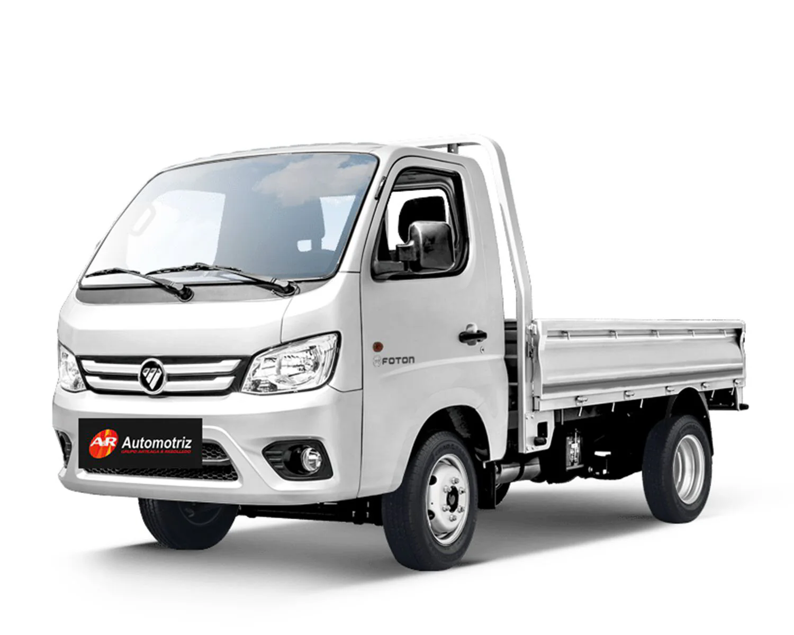
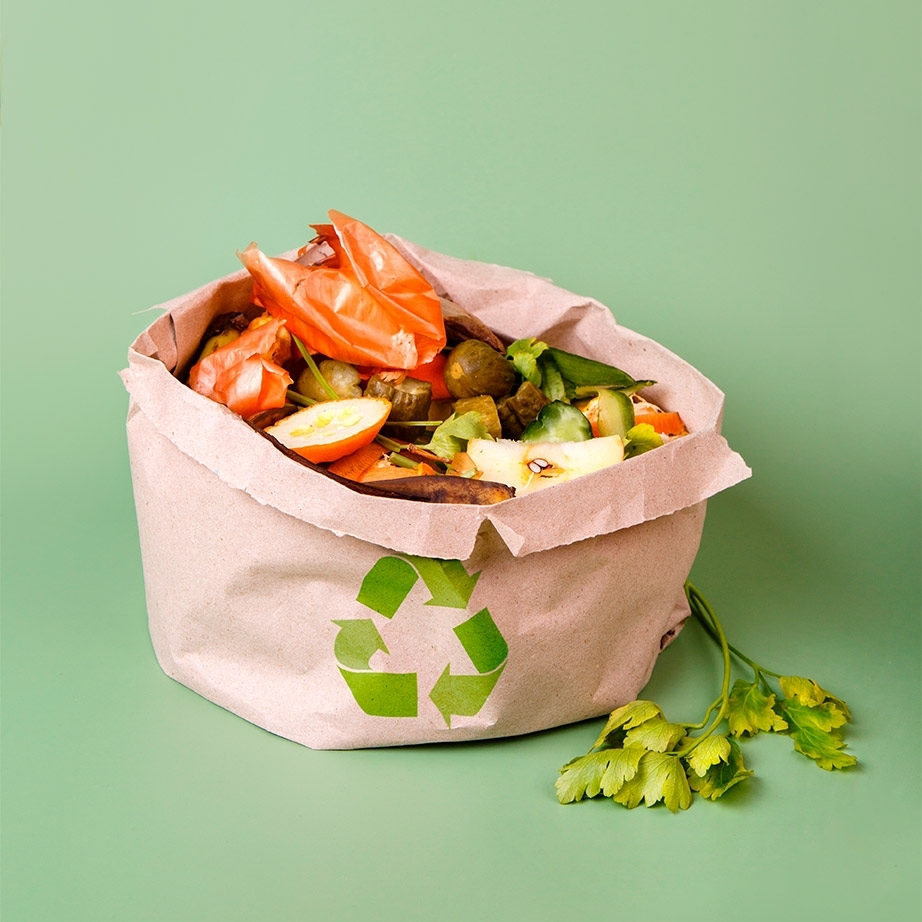
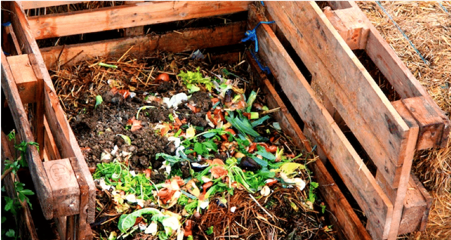

Transformando residuos en vida
Servicio de reciclaje organico y compostaje en Pichilemu
Unete al cambioNuestros Servicios
Nuestro Proceso

1. Recoleccion
Retiramos tus residuos organicos en contenedores especiales, asegurandonos de que todo se transporte de manera higienica y efectiva.
2. Clasificacion
Separamos y preparamos los materiales organicos para un compostaje optimo, diferenciando por tipo y caracteristicas.


3. Compostaje
Transformamos los residuos en compost mediante un proceso natural, controlando todos los factores para obtener la mejor calidad.
4. Resultado
Obtenemos compost de calidad para enriquecer la tierra, cerrando el ciclo de la economia circular y devolviendo nutrientes al suelo.
Nuestro Impacto

"El servicio de Tomas Verde ha cambiado completamente la manera en que manejamos nuestros residuos. Es increible ver como nuestros desechos se transforman en algo util, y el equipo siempre es puntual y amable. ¡Recomendado al 100%!"
Unete al Cambio
¿Listo para comenzar?
- ✓ Servicio personalizado adaptado a tus necesidades
- ✓ Recoleccion programada en horarios convenientes
- ✓ Asesoria continua sobre gestion de residuos
- ✓ Reportes de impacto para medir tu contribucion